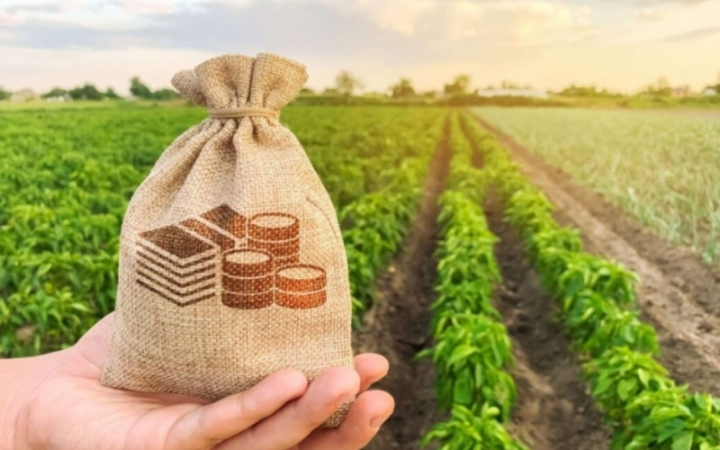
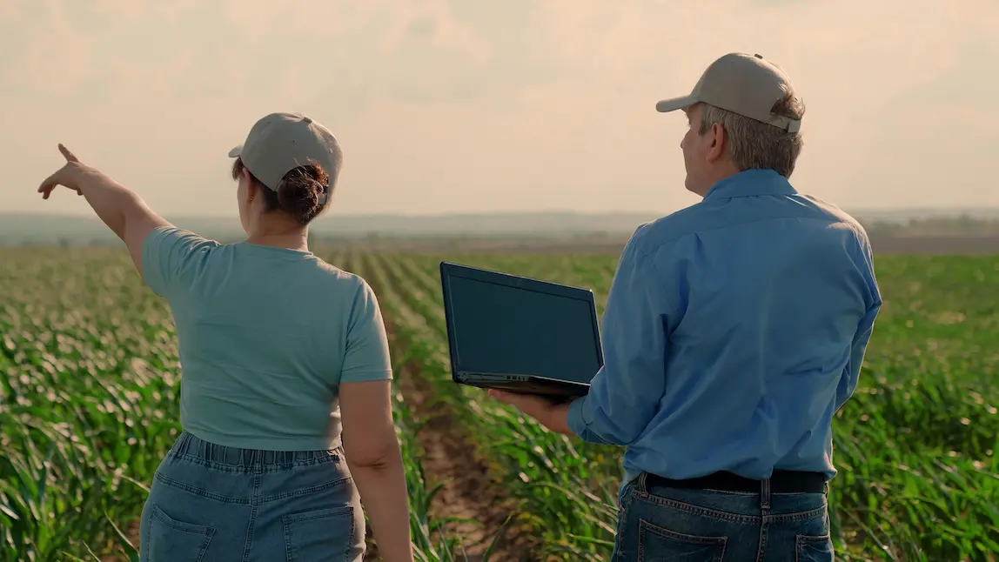
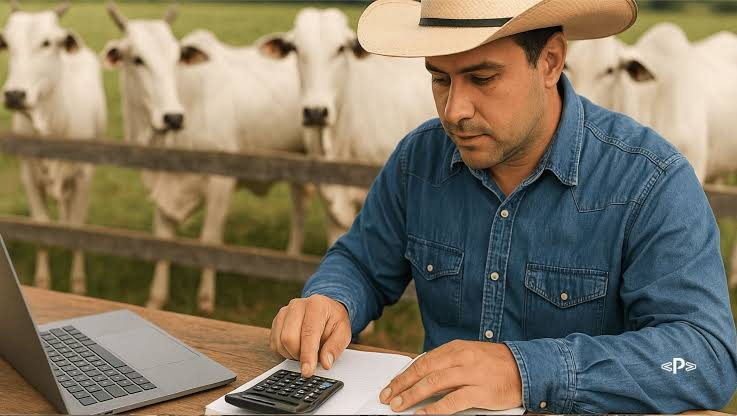
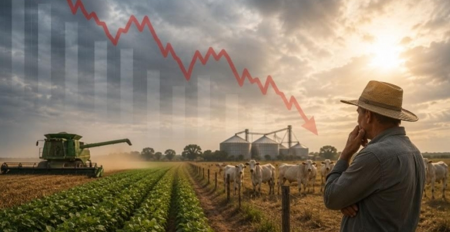

Volatilidade dos Insumos
Insumos como fertilizantes, sementes e defensivos flutuam de acordo com o mercado internacional e o câmbio, dificultando a previsão precisa de custos antes do início da safra.

Plataforma de precisão
Planejamento operacional inteligente
Uma experiência visual inspirada em ambientes digitais corporativos do agronegócio global, com foco em tecnologia, confiabilidade e organização.

Desafios
Volatilidade dos Insumos
Insumos como fertilizantes, sementes e defensivos flutuam de acordo com o mercado internacional e o câmbio, dificultando a previsão precisa de custos antes do início da safra.

Custos Fixos e Depreciação
Equipamentos (tratores, semeadoras) sofrem desgaste e exigem manutenção. Determinar a parcela exata dessa depreciação por hectare de soja é um desafio constante.

Risco Climático e Replantio
Secas ou excesso de chuvas podem exigir o replantio de partes da lavoura, elevando os custos operacionais de forma inesperada.

Custos de Oportunidade e Financeiros
Envolvem o custo do capital investido (que poderia render em outras aplicações, como a taxa Selic) e o impacto de juros de financiamentos agrícolas.
.jpeg)
Ferramenta
Selecione os equipamentos e avalie o desempenho operacional com mais clareza.
Confiabilidade
Dr. João Silva
O uso eficiente de combustível é essencial para reduzir custos na produção agrícola.
Dra. Maria Oliveira
Planejamento adequado das operações pode aumentar significativamente a produtividade.
Quem somos
O sistema Gestão Rural Inteligente foi desenvolvido para ajudar produtores a tomar decisões mais eficientes no campo.
Nosso objetivo é unir tecnologia e agronegócio, oferecendo ferramentas simples e inteligentes para otimizar custos e produtividade.